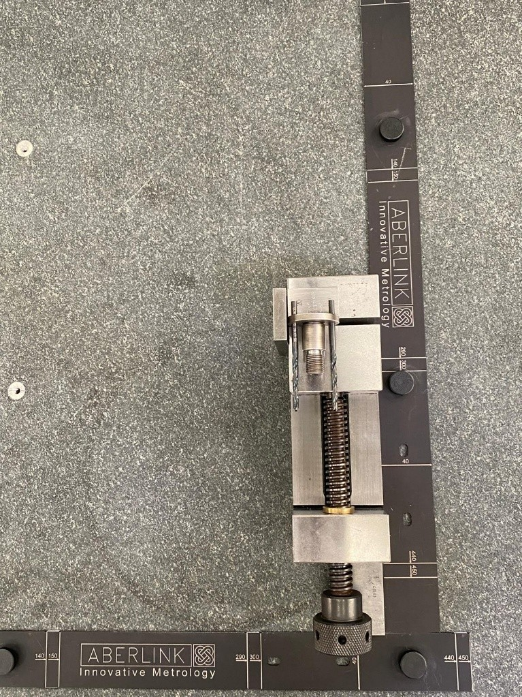
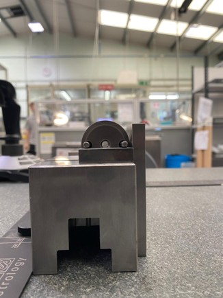

The arrangement was incorporated into operator instructions so different operators could reproduce the same loading condition before running the inspection program.
The objective is repeatability from one loading to the next, reducing operator-dependent variation before measurement begins.
Existing holes are used with locating / clocking pins to control the component's physical orientation during loading.
A gauge block / slip gauge provides a physical setup reference for reproducing the required relationship between the component feature and Vice edge.
Gauge block → positional reference; locating pins → rotational reference; Vice → secure workholding.
Setup instructions translate the physical arrangement into a repeatable loading condition before the CMM program is run.